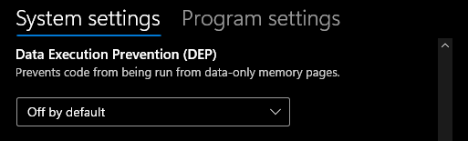
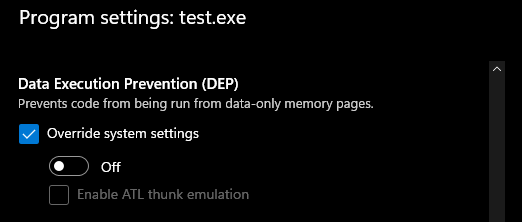

There is no any way to get an executable stack or heap (without VirtualProtect) in a program you compile on Windows 11. Bold assertion but I am making it so someone will explain to me why I am wrong.
Turning off DEP and NX everywhere I can find, I have not been able to produce an executable stack or heap.
If you want to follow along you'll need Visual Studio or the Visual Studio Build Tools installed for the the developer command prompt.
Porting the pwn.college (not affiliated) shellcode exercises to Windows right now. These challenges take some shellcode, place it in a stack variable, and run it. I initially thought the linker option /NXCOMPAT:NO would give an executable stack. When it did not I hit it with the old VirtualProtect, made it EXECUTE_READWRITE, and moved on with my life.
Eventually I got curious how I could get an executable stack and dove a little deeper. That also led to questions about an executable heap. After some investigation, my current assertion is that it is not possible to get an executable stack or heap on Windows 11.
Some of the documentation talked about the system DEP policy, so let's check that first. Open a Command Prompt as Administrator and check with bcdedit.
C:\Windows\System32>bcdedit
Windows Boot Manager
--------------------
identifier {bootmgr}
device partition=\Device\HarddiskVolume1
path \EFI\Microsoft\Boot\bootmgfw.efi
description Windows Boot Manager
locale en-US
inherit {globalsettings}
default {current}
resumeobject {9378e909-ec67-49fd-ab7b-46c2525300e3}
displayorder {current}
toolsdisplayorder {memdiag}
timeout 30
Windows Boot Loader
-------------------
identifier {current}
device partition=C:
path \Windows\system32\winload.efi
description Windows 11
locale en-US
inherit {bootloadersettings}
recoverysequence {9378e909-ec67-49fd-ab7b-46c2525300e3}
displaymessageoverride Recovery
recoveryenabled Yes
isolatedcontext Yes
allowedinmemorysettings 0x15000075
osdevice partition=C:
systemroot \Windows
resumeobject {9378e909-ec67-49fd-ab7b-46c2525300e3}
nx OptIn
bootmenupolicy Standard
Note the nx OptIn line. Using bcdedit /set nx OptOut works. Due to Secure Boot through, I cannot set it to AlwaysOff. So once again, Secure Boot ruins all our fun.
C:\Windows\System32>bcdedit /set nx alwaysoff
An error has occurred setting the element data.
The value is protected by Secure Boot policy and cannot be modified or deleted.
We should still be able to do this with OptIn though, right?
...right?
I tried it, so to not give Windows any excuses in this post, I disabled Secure Boot in BIOS, set NX to AlwaysOff, and rebooted.
C:\Windows\System32>bcdedit /set nx alwaysoff
The operation completed successfully.
In addition, we open the Exploit Protections menu. Since Windows messed around with Control Panel (perfect) and added Settings (awful) on top of it, which is kind of like Control Panel Lite, who knows what this changes. Let's set DEP to off.

We also add a program specific override.

First, we have the API SetProcessDEPPolicy. The documentation reads: If the DEP system policy is OptIn or OptOut and DEP is enabled for the process, setting dwFlags to 0 disables DEP for the process. Let me tell you though, it does not.
We are also going to compile with the linker flag /NXCOMPAT:NO and verify that the NX compatibility is not set on the binary with dumpbin.
First, I would like to apologize. I just started this company and cannot afford syntax highlighting at this time.
This program queries a pointer for its memory protections and prints them out. It declares a stack pointer and a heap pointer and sets them up with a nop sled (0x90) and return (0xC3). Note, x86/64 opcodes, will not work on ARM. The program then prints out their memory protections.
Following that, we crash our program by casting our memory regions as function pointers and calling them. The commented out VirtualProtect calls are there so you can verify that these do run when the stack and heap regions are EXECUTE_READWRITE. Finally, there is a cute little print statement so we can see if the regions ran to completion.
#include <windows.h>
#include <stdio.h>
void PrintMemoryProtection(DWORD protect) {
switch (protect) {
case PAGE_EXECUTE: printf("Execute\n"); break;
case PAGE_EXECUTE_READ: printf("Execute, Read\n"); break;
case PAGE_EXECUTE_READWRITE: printf("Execute, Read, Write\n"); break;
case PAGE_EXECUTE_WRITECOPY: printf("Execute, Write Copy\n"); break;
case PAGE_NOACCESS: printf("No Access\n"); break;
case PAGE_READONLY: printf("Read Only\n"); break;
case PAGE_READWRITE: printf("Read, Write\n"); break;
case PAGE_WRITECOPY: printf("Write Copy\n"); break;
case PAGE_GUARD: printf("Guard Page\n"); break;
case PAGE_NOCACHE: printf("No Cache\n"); break;
case PAGE_WRITECOMBINE: printf("Write Combine\n"); break;
default: printf("Unknown protection\n"); break;
}
}
int main() {
SetProcessDEPPolicy(0);
MEMORY_BASIC_INFORMATION mbi;
BYTE stack_ptr[0x100];
PBYTE heap_ptr = (PBYTE)malloc(0x100);
for (int i=0; i<0x100; i++) {
stack_ptr[i] = 0x90; // nop
}
stack_ptr[0xFF] = 0xC3; // ret
for (int i=0; i<0x100; i++) {
heap_ptr[i] = 0x90; // nop
}
heap_ptr[0xFF] = 0xC3; // ret
if (VirtualQuery(stack_ptr, &mbi, sizeof(mbi)) != 0) {
printf("Memory Protection of %p (stack): ", stack_ptr);
PrintMemoryProtection(mbi.Protect);
} else {
printf("Error getting memory protection\n");
}
if (VirtualQuery(heap_ptr, &mbi, sizeof(mbi)) != 0) {
printf("Memory Protection of %p (heap): ", heap_ptr);
PrintMemoryProtection(mbi.Protect);
} else {
printf("Error getting memory protection\n");
}
DWORD oldProtect;
// VirtualProtect(stack_ptr, 0x100, PAGE_EXECUTE_READWRITE, &oldProtect);
((void (*)())stack_ptr)();
// VirtualProtect(heap_ptr, 0x100, PAGE_EXECUTE_READWRITE, &oldProtect);
((void (*)())heap_ptr)();
printf("ExeCUTEd!\n");
free(heap_ptr);
return 0;
}
We will be compiling with cl test.c /link /NXCOMPAT:NO /DYNAMICBASE:NO /HIGHENTROPYVA:NO. Turning off ASLR does work.
First, if we compile a plain executable with cl test.c, then run dumpbin /HEADERS text.exe we see the following DLL Characteristics.
8160 DLL characteristics
High Entropy Virtual Addresses
Dynamic base
NX compatible
Terminal Server Aware
Recompiling without NX compatibility and ASLR like so, cl test.c /link /NXCOMPAT:NO /DYNAMICBASE:NO /HIGHENTROPYVA:NO, we can see that the the compiler recognizes them.
C:\Users\user\Documents\Development\pwncollege-win\shellcode-injection>cl test.c /link /NXCOMPAT:NO /DYNAMICBASE:NO /HIGHENTROPYVA:NO
Microsoft (R) C/C++ Optimizing Compiler Version 19.36.32537 for x64
Copyright (C) Microsoft Corporation. All rights reserved.
test.c
Microsoft (R) Incremental Linker Version 14.36.32537.0
Copyright (C) Microsoft Corporation. All rights reserved.
/out:test.exe
/NXCOMPAT:NO
/DYNAMICBASE:NO
/HIGHENTROPYVA:NO
test.obj
That is confirmed with another dumpbin /HEADERS test.exe
8000 DLL characteristics
Terminal Server Aware
The moment everyone has been waiting for! We run the program... and it crashes.
C:\Users\user\Documents\Development\pwncollege-win\shellcode-injection>test.exe
Memory Protection of 000000000014FDD0 (stack): Read, Write
Memory Protection of 00000000004A4080 (heap): Read, Write
C:\Users\user\Documents\Development\pwncollege-win\shellcode-injection>echo %errorlevel%
-1073741819
The memory is still only RW and we do not reach our post-call print statement. That error code is the classic access violation 0xc0000005. We can comment and uncomment the different run stack, run heap, and virtual protect combinations. I have not been able to get an executable stack or heap without VirtualProtect.
Why are there all these DEP and NX options that do nothing? This feels like an exhaustive list of all the places you can disable NX and DEP, but still no executable stack or heap.
The ASLR options work.
I can't help but feel I am missing something. It is probably some high level design decision that was made in Windows Vista. This might just be no longer possible on Windows.
It makes it a bit harder to bring people up in exploitation. Any very basic stack smash on Windows will have to be very contrived. Overall a net positive on the world; our computers are safer and our exploits sell for more.